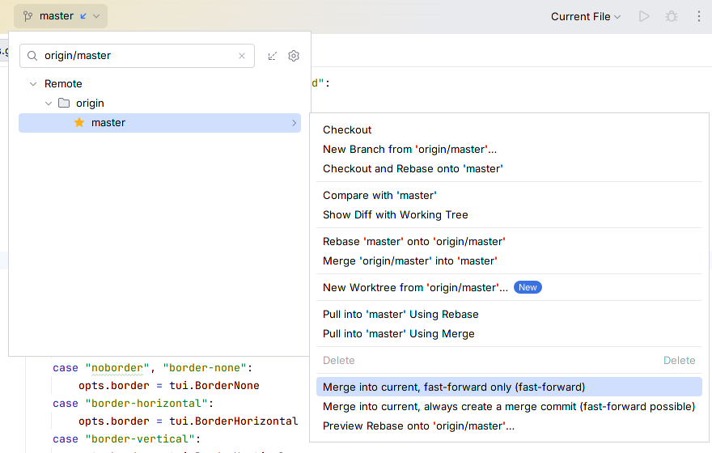
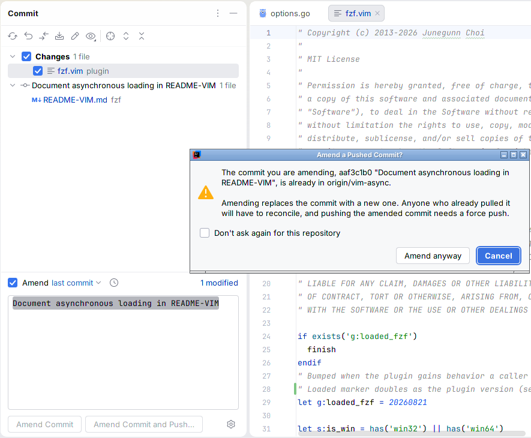
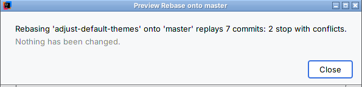

Histsight quick start
Installing Histsight and using its three features, all free. Back to the Histsight product page.
Install (JetBrains IDEs 2025.1 or later)
- In the IDE, open Settings > Plugins, type Histsight in the search box and click Install. The listing is in review and not on JetBrains Marketplace yet; until it is live, the search finds nothing.
- The IDE's bundled Git plugin must be enabled (it is by default). Restart if the IDE asks.
From a zip (for example one you were sent before the listing is live): Settings > Plugins, the gear icon next to the search box (2026.x) or next to the Marketplace/Installed tabs (2025.x), Install Plugin from Disk (shown with "…" in 2025.x), choose histsight-1.1.2.zip, accept the third-party plugin notice, and restart.
After the restart, 2026.x may show the IDE's own balloon "Cannot update plugin. Unable to identify where Histsight: Merge & Amend was installed from." It is harmless: the IDE does not update plugins installed from a zip, and says so. Install a newer zip the same way, or install from the Marketplace, which does not show it and keeps Histsight updated.
Histsight works with the bundled Git integration of IntelliJ IDEA, PyCharm, WebStorm, PhpStorm, GoLand, Rider and the other JetBrains IDEs, version 2025.1 and later. Tested in IntelliJ IDEA 2025.1.7 and 2026.3 and PyCharm 2026.3 on Linux, with Git 2.43 and 2.51; Windows, macOS, the other IDEs and Remote Development have not been tested yet. The rebase preview needs Git 2.40 or later; everything else works with any Git the IDE supports.
Merge modes (free)
- Open the Branches popup (the branch name in the toolbar, or Ctrl+Shift+`), pick any branch other than the current one and open its submenu. The same entries are in the context menu of a branch in the Branches pane of the Git tool window's Log tab.
With several repositories in the project, the popup lists them first: open the repository, then Remote Branches or Local Branches, then the branch; or use Common Remote Branches to merge a branch that every repository has, in all of them at once. - At the bottom: Merge into current, fast-forward only and Merge into current, always create a merge commit. The word in brackets says what will happen: fast-forward, already up to date or diverged.

- Fast-forward only moves the current branch forward when the selected branch is strictly ahead. If the two have diverged, nothing changes; the notification names both branches and offers Rebase instead or Merge normally, which hand over to the IDE's own rebase and merge.
- Always create a merge commit records a two-parent merge commit even when a fast-forward was possible (
git merge --no-ff). - The mode you click applies to that one merge. Your Git configuration and the IDE's own merge entry are unchanged.
- Local changes or untracked files in the way: Git refuses and nothing changes; the notification names the files. For local changes it offers Stash, merge, restore, the same merge with Git's
--autostash. If putting your changes back conflicts, the IDE's Conflicts dialog opens saying the merge is done: resolve the files, there is nothing to commit, and a copy of your changes stays in Git's stash. - Several repositories: each repository with the branch is merged, and one notification lists every outcome. Merge conflicts open the IDE's own Conflicts dialog.
Pushed-commit warning (free)
Amend as usual: tick Amend in the Commit tool window. If a remote-tracking branch already contains the commit, one confirmation names the branch (for example origin/vim-async; with many, your upstream and two more, and the rest counted). Cancel is the default button; Amend anyway goes on; Don't ask again for this repository turns it off for that repository only. A commit that is only local asks nothing. Turn a silenced warning back on in Settings > Tools > Histsight.

Rebase preview (free)
- Check out the branch you want to rebase. In the Branches popup or pane, open the submenu of the branch to rebase onto and choose Preview Rebase onto '<branch>'….
- It says how many commits the rebase would replay and how many would stop with conflicts, for example "Rebasing 'adjust-default-themes' onto 'master' replays 7 commits: 2 stop with conflicts." If untracked files would be overwritten by the target branch, it says Git will not start the rebase and names them.
- Close leaves everything as it was. The preview never touches your working tree, index, branches or reflog. To rebase, use the IDE's own Rebase entry in the same submenu.

The count assumes each conflict is resolved with the replayed commit's own version of the files, which is what Accept in the Yours column of the IDE's Conflicts dialog does during a rebase. A different resolution can change what happens to later commits. Long previews run in the background with progress and Cancel.
Free
Everything above is free, with no time limit, no licence and no trial. Nothing appears at startup, and there are no ads in the IDE.
Known limits
- Rebase preview: Git 2.40 or later; 2.42 or later to read
.gitattributesmerge settings exactly as the rebase will; 2.44 or later in a partial clone. Plaingit rebase <branch>only:--rebase-merges,--onto, autosquash andrebase.*settings that change which commits are picked are not modelled. - The preview checks untracked files against the target branch only; with
rerereon, a conflict Git resolves from a recorded resolution is still listed. - The pushed-commit warning checks the last commit of each repository being amended. In the Commit tool window it reads Amend mode through an IDE API marked experimental; if a future IDE removes it, the warning there stops.
- Git executables on WSL are not supported for the rebase preview.
- Not included: Jujutsu, a rebase that defers conflicts to the end, a commit graph,
--squash, a global default merge mode (Git'smerge.ffdoes that), an amend view, push. English only.
Privacy
Histsight runs only the local git executable on your project's own repositories. None of the commands it runs is a fetch, pull or push, and it sends nothing anywhere: no telemetry, no analytics. In a partial clone, Git itself downloads missing file contents when a merge or amend needs them, as it does for the IDE's own merge; the rebase preview turns that off and never downloads. See also the privacy policy.
Source code
Histsight is GPL-3.0-or-later (licence text). The complete source ships inside the plugin zip, as histsight/source/histsight-1.1.2-source.zip.
Support
Email support@ochrestack.com with the IDE version (Help > About), the output of git --version, and what you saw. Bug reports and feature requests are welcome at the same address.